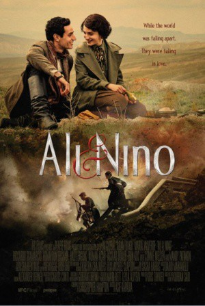
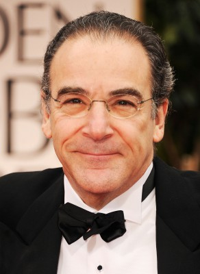
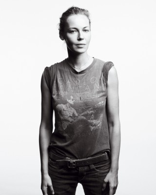
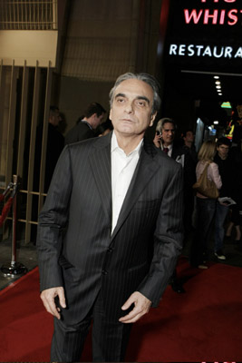
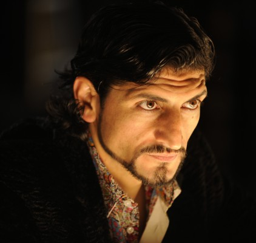
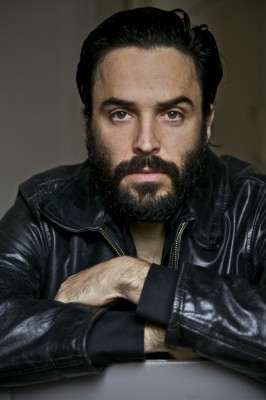

#7377 Ali & Nino - Weil Liebe keine Grenzen kennt
 
 IMDB-Wertung: 7.2 / 10
IMDB-Wertung: 7.2 / 10  Metascore: 0
Metascore: 0 
Am Vorabend der russischen Revolution verlieben sich der temperamentvolle Muslim Ali und die schöne Christin Nino unsterblich ineinander. Gegen den Willen ihrer Eltern planen sie ihre Hochzeit, doch schon bald steht mehr als nur Religion und Sitte der Verbindung der beiden Liebenden im Weg. Weil Alis Wurzeln in Aserbaidschan liegen und Nino aus Georgien stammt, findet sich das junge Paar beim Ausbruch des Ersten Weltkrieges inmitten der Kämpfe zwischen ihren Nationen wieder. Die Ereignisse entwickeln sich zu einer Zerreißprobe für ihre Liebe, als Ali sich für Nino oder für sein Heimatland entscheiden muss.
Jahr: 2016
Dauer: 100 Minuten
FSK: 12
Land: England Studio: Alive Vertrieb und MarketingTonspuren: DTS - ,
Untertitel: Englisch,
Auflösung: 1080p (1920x808) Größe: 4413 MB
Genre: Drama, Krieg, Liebe
Regisseur: Asif Kapadia
Drehbuch: Christopher Hampton
Soundtrack:
Darsteller:
- Adam Bakri als Ali Khan Shirvanshir
- María Valverde als Nino Kipiani
-  Mandy Patinkin als Duke Kipiani
-  Connie Nielsen als Duchess Kipiani
-  Homayoun Ershadi als Ali's Father
- Halit Ergenç als Fatali Khan Khoyski
-  Numan Acar als Seyid Mustafa
- Daniz Tacaddin als Nino's Friend
- Jovdat Shukurov als Russian Officer
-  Assaad Bouab als Ilyas
- Riccardo Scamarcio als
- Fakhraddin Manafov als Haji Zeynalabdin Taghiyev
- Nigar Gulahmadova als Sona Taghiyeva
- Parviz Gurbanov als Musa Naghiyev
- Khumar Salimova als Nino's Friend
- Mekhriban Zeki als Sultan Khanim
- Parviz Mammadrzayev als Gochu
- Ümit Demirbas als Giant Russian
- Ekin Koç als Mehmed
- Kushvar Sharifova als
Datei: X:\2016(A-F)\Ali und Nino (2016, FSK12, 1920x808).mkv seit 06.11.2017
Festplatte: HD 2016(A-Z)
 Es gibt insgesamt 147 Filme in der Gruppe '2016(A-F)'
Es gibt insgesamt 147 Filme in der Gruppe '2016(A-F)'